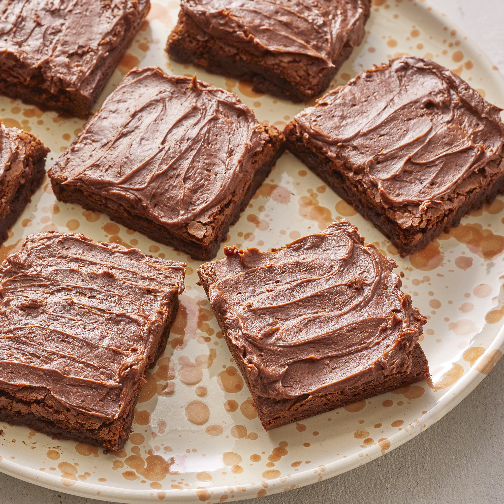

Brownies

Description
Description goes here
Ingredients
Brownie Batter
- ½ cup butter
- 1 cup white sugar
- 2 eggs
- 1 tbsp vanilla extract
- &frac13 cup unsweetened cocoa powder
- ½ cup all-purpose flour
- ¼ tsp salt
- ¼ tsp baking powder
Frosting
- 3 tbsp softened butter
- 3 tbsp unsweetened cocoa powder
- 1 tbsp honey
- 1 tsp vanilla extract
- 1 cup confectioner's sugar
Steps
- Preheat oven to 350F.
- Grease and flour an 8-inch pan.
- In a large saucepan, melt ½ cup butter.
- Remove saucepan from heat, and stir in sugar, eggs, and 1 tsp vanilla.
- Beat in &frac13 cup cocoa powder, ½ cup flour, salt, and baking powder.
- Spread batter into pan.
- Bake for 25-30 minutes, being careful not to overcook.
- Remove brownies and set aside.
- Combine 3 tbsp softened butter, 3 tbsp cocoa powder, honey, 1 tbsp vanilla extract, and 1 cup confectioner's sugar.
- Stir until smooth, and frost brownies while they're still warm.